This is and will be a work in progress. I keep discovering new insights and stories and finding new ways of sharing them.
The main thrust of the people here are within three generations of me. Some people within five generations are also coming in.
This effort is much larger effort:
All in Wikipedia names are in given name family name are listed in alphabetical order. Another way of thinking about it is whatever name might appear on their tombstone. When names are originally in part in other non-English languages, they are translated into English in the most modern spelling.
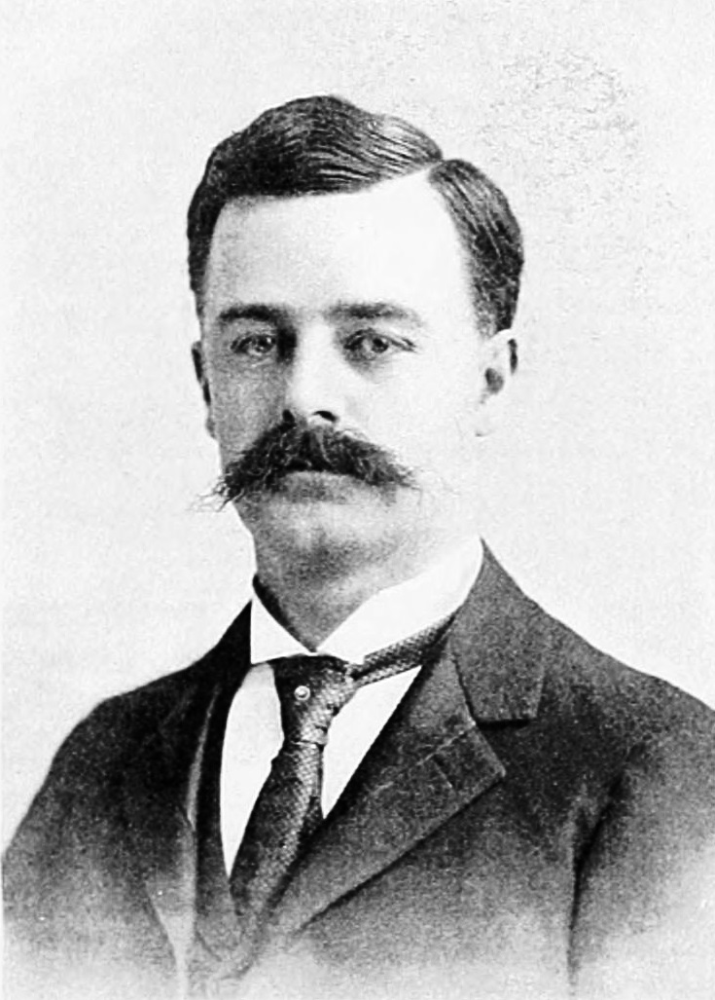
1859 – 1931 | Industrialist, attorney, philanthropist, and orchid enthusiast
A pioneering businessman known as the "Copper King," Albert Cameron Burrage organized the Amalgamated Copper Company and founded mining operations that revolutionized low-grade copper ore processing. Beyond mining, he became renowned as a cultivator of rare orchids and served as the founding president of the American Orchid Society (1921–1929). The Royal Horticultural Society awarded him the Lindley Medal in 1925 for exceptional orchid exhibitions. His 28-room mansion on Commonwealth Avenue in Boston was built in 1899 at a cost of $600,000 and remains an architectural landmark.
Given how important he was in the family, I'm so surprised how little I knew about him. I visited both his houses, the houses on Commonwealth Avenue and Redlands, California. I have several objects of copper fabricated from ore from Chuquicamata. While I was in boarding school, I possessed a knife from one of the workers in the copper mine. The knife had been used to murder somebody. Unfortunately, the knife went missing while I was in boarding school.
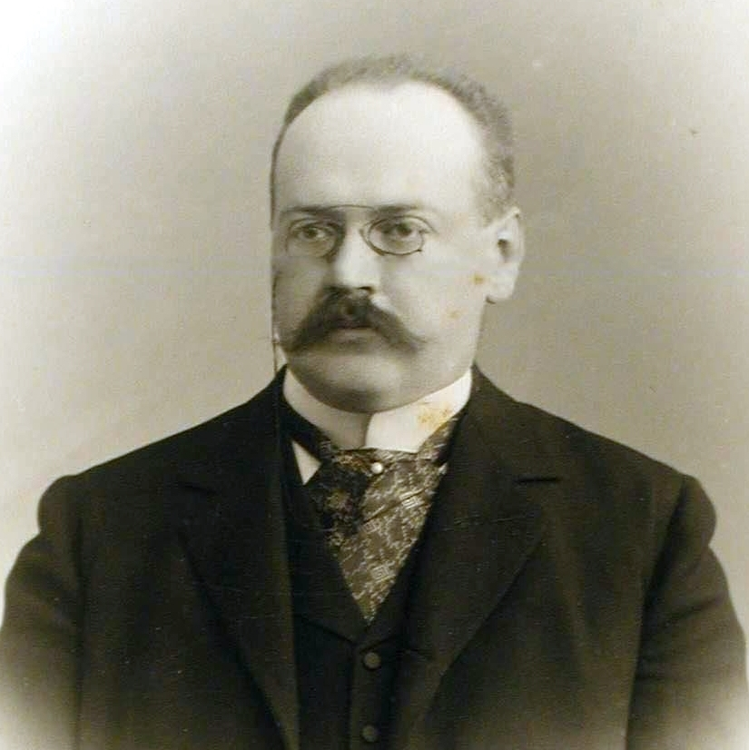
1862 – 1928 | Prime Minister of the Russian Empire
The penultimate Prime Minister of Imperial Russia (November 1916 – January 1917), Alexander Fyodorovich Trepov served during the tumultuous final months of the Romanov dynasty. He held pivotal roles as Minister of Transport and Communications, developing the strategic Kirov Railway to Murmansk during World War I. A reformer who clashed with Grigori Rasputin's influence at court, Trepov sought parliamentary reforms but was dismissed after only 50 days in office. After the October Revolution, he emigrated to France and supported the White Army, dying in exile in Nice in 1928.
My great grandmother, Princess Vera's uncle was the last Prime Minister of Russia under Tsar Alexander. That's how I knew about Alexander Tripov. Unfortunately, the only picture I knew of him was quite mousy and timid-looking. Even so, he was one of my claims to fame.
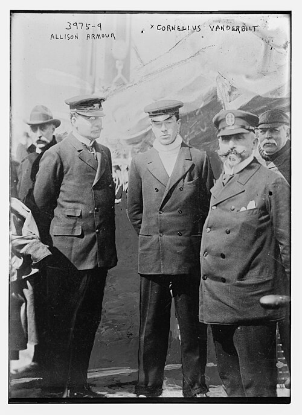
circa 1851 – 1940 | Scientific explorer and Olympic leader
A pioneering naturalist and explorer, Allison Vincent Armour conducted fifteen major scientific expeditions for the United States Department of Agriculture, advancing American agricultural knowledge. He served as a board member of the Olympic Committee from 1908–1914, helping to establish the Olympic Games' institutional structure in America. His contributions bridged scientific exploration and international athletic governance.
Great Uncle Allison was a far more dashing figure than my great-grandfather, Geerge Armour. He raced his yacht against Connie Vanderbilt. Kaiser Willy was on his yacht when the The telegram that announced that Archduke Sarajevo had been shot. The builder of magnificent yachts that carried out scientific expositions, including discovering Carthage. Grandfather, While still a student at Princeton, was on one of his trips around the world, when Grandfather woke up one morning in India with the tattoo of a cobra on his arm.
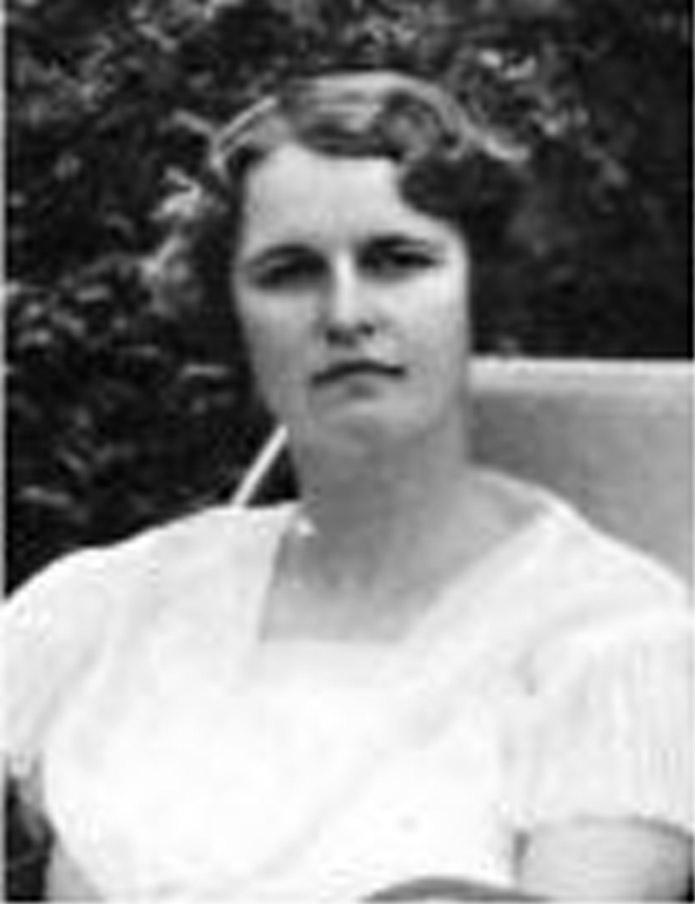
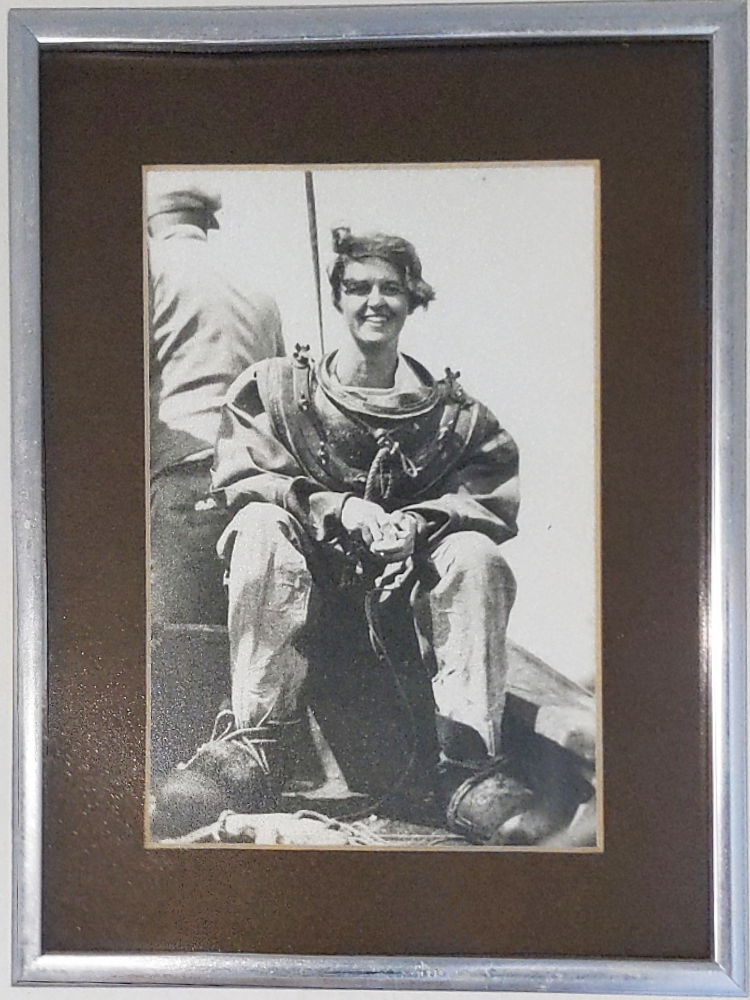
1890 – 1983 | Founder of The Herb Society of America
Anne Bell Burrage co-founded and shaped The Herb Society of America, formally established on August 23, 1933, at her home in Ipswich, Massachusetts. Born into a prominent Boston family, she gathered six fellow gardeners and horticulturists to form a society dedicated to the study and research of herbs. From this small gathering grew a national institution whose mission has endured for nearly a century, promoting botanical knowledge and horticultural education.
My grandma used creativity, design, joie de vivre, enthusiasm, imagination, getting involved and making things happen. She probably was not a very caring mother.
1771 – 1843 | Irish-American pioneer, civic leader, and family patriarch
Born in 1771, David Fulton was an Irish-American settler remembered as a civic leader and the patriarch of a family line that would extend into American public life across later generations. Detailed records of his life are still being gathered; this entry is a placeholder pending further genealogical research.
Grandma often talked about a signer of the Declaration of Independence and of being related to settlers in Jamestown in 1607. It was through this line.
I had almost no connection with her southern side. Nonetheless, I did receive a cheque along with a bunch of other descendants from a relative who died in Little Rock in the 80s.
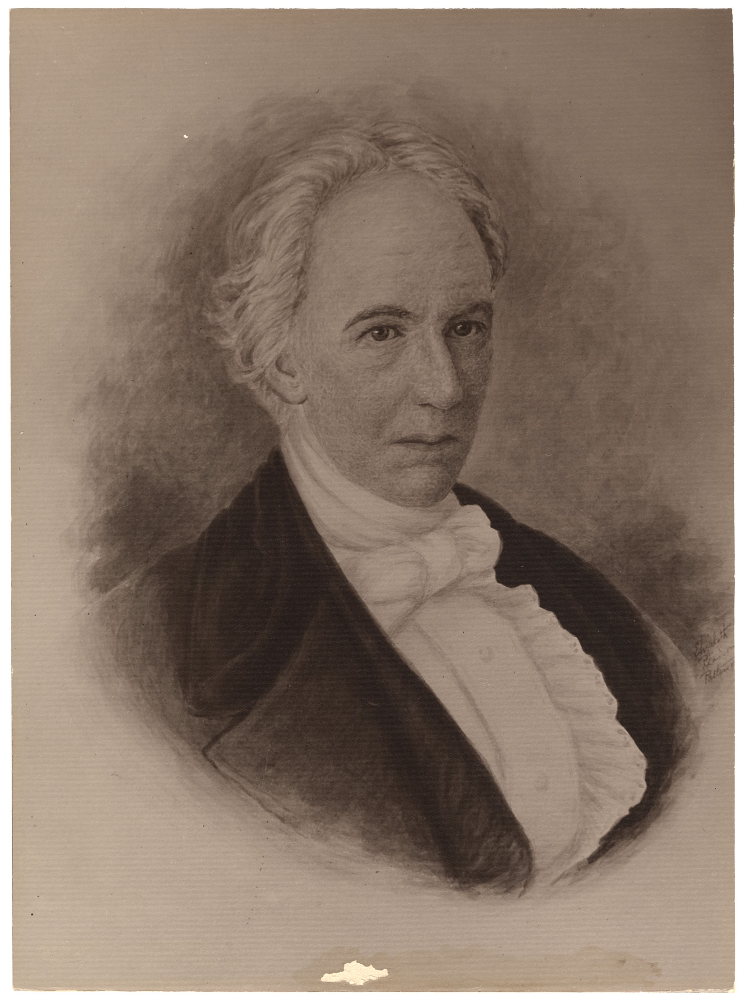
1777 – 1856 | American lawyer and first Attorney General of Maine
Born September 19, 1777, in Waterbury, Connecticut, Erastus Foote was admitted to the bar in 1800 and built his law practice in Camden, Maine, then still part of Massachusetts. He served as County Attorney of Lincoln County and held the rank of Colonel in the Massachusetts militia during the War of 1812. A Jeffersonian (Democratic-)Republican, he was elected to the Massachusetts Senate in 1812 and later the Massachusetts House. After Maine achieved statehood in 1820, Governor William King appointed him the new state's first Attorney General — an office he held, through three appointments, until 1831. He returned to public service in the Maine House of Representatives in 1840 and died July 14, 1856, in Wiscasset, Maine, at age 78.
One summer we visited his house and met some of the family in Wisconsin, Maine. For a number of years, I was in a relationship with one of his descendants living in Walnut Creek, CA.
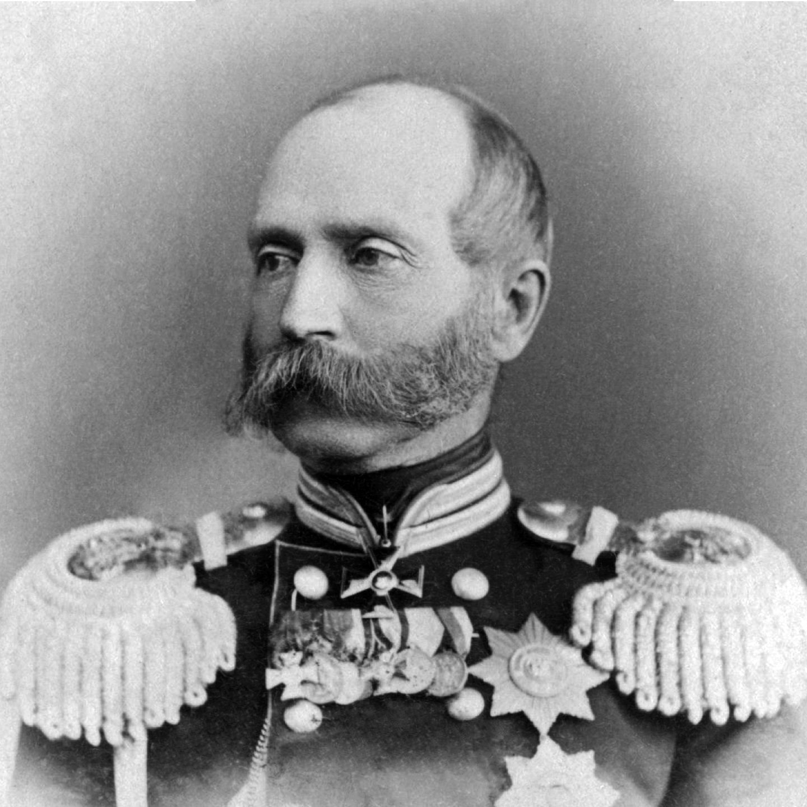
1809 – 1889 | Russian general and Governor of Saint Petersburg
Fyodor Fyodorovich Trepov began his military career in 1831, helping suppress the November Uprising in Poland, and later commanded a regiment of gendarmes in Kiev. After Dmitry Karakozov's 1866 assassination attempt on Tsar Alexander II, Trepov was appointed chief of Saint Petersburg's police force, where he restored order and reformed the force, rising to adjutant general in 1867. He served as Governor (Lord Mayor) of Saint Petersburg from 1873 to 1878. In 1878 the revolutionary Vera Zasulich shot and wounded him after he ordered the flogging of a political prisoner; Trepov survived the much-publicized attack and retired with the rank of cavalry general. He was the father of Alexander Trepov (also in this list) and the patriarch of a prominent family of imperial officials.
Granny told me that when the family first moved to Poland, They staked out a plan of the house using their footsteps in a field somewhere in Poland. Eventually, the house was built. Unfortunately, the rooms were so large they were unable to be kept warm in winter.
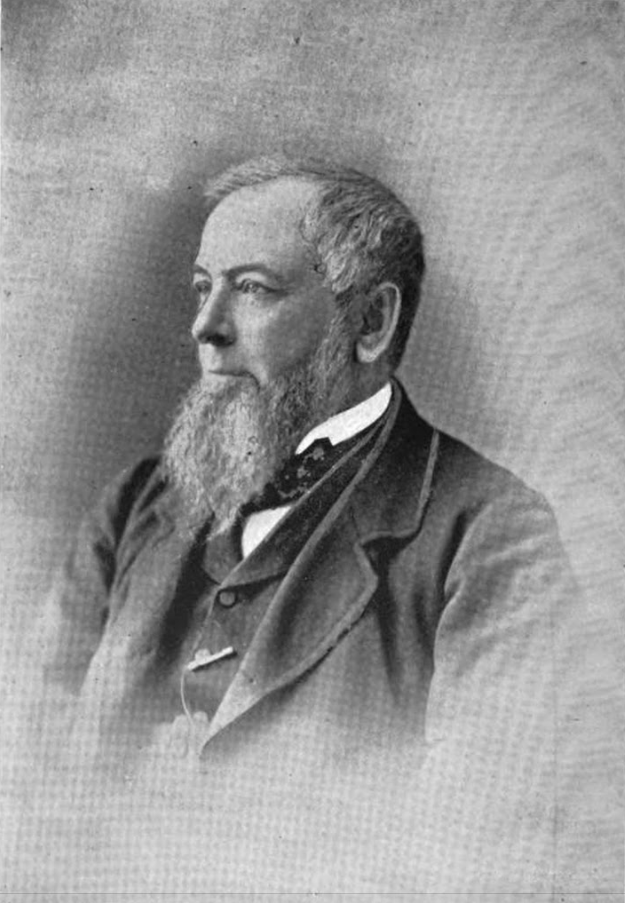
1812 – 1881 | Scottish American grain pioneer and art patron
Born in Campbeltown, Scotland, George Armour emigrated to America and revolutionized commodity distribution through his invention of mechanized grain elevator systems. Operating from Chicago, he was instrumental in establishing the Chicago Board of Trade's standardized grading system for grains (1858), which transformed global grain commerce. He served as president of the Chicago Board of Trade (1875–1876) and was a founder of the Merchants' Loan and Trust Company, which later became Continental Illinois. Beyond business, Armour was a passionate arts patron who served as the first president of the Chicago Academy of Fine Arts (1879), the precursor to the Art Institute of Chicago. He also founded the YMCA of Chicago and was an active elder of the Second Presbyterian Church, whose tower was donated by his family in his memory.
Here is one of the more amazing people in American history: True Rags-to-Riches Story. Even so, my grandparents rarely spoke about him. He was just known as the person who put the first grand elevators in Chicago. And this is understandable. I was able to find very little about him when I was creating his Wikipedia page.
I don't remember my great, great grandfather ever being mentioned by my grandparents. Perhaps only that his son, Albert Burrage, came east from California to go to Harvard.
Much later in life, I discovered the relationship. We've been to visit his grave in Napa and the gates to his vineyard that he started as one of the first vineyards in Napa in the 1870s.
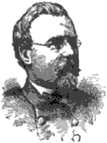
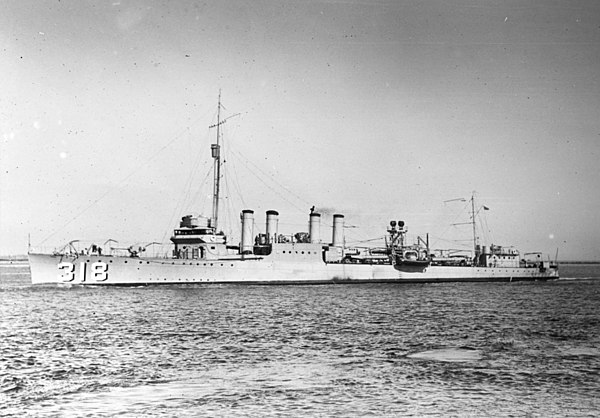
1832 – 1873 | Union Navy commander in the American Civil War
Born in Pennsylvania on July 16, 1832, James Whitehill Shirk was appointed a midshipman in the U.S. Navy at age 16 in 1849, cruising the coasts of Africa, East India, and North America aboard the gunnery ship USS Plymouth over the following decade. He won distinction during the American Civil War serving in the Mississippi Squadron — notably at the Battle of Fort Henry (February 1862) and at Pittsburgh Landing, where his ship USS Lexington, alongside USS Tyler, prevented Confederate forces from crossing the river and helped save the Union Army from defeat at the Battle of Shiloh. He went on to fight at Chickasaw Bayou, St. Charles, and Arkansas Post, and commanded the Seventh Division of the Mississippi Squadron in 1863–1864. After the war he cruised with the European Squadron before his death in Washington, D.C., on February 10, 1873. The destroyer USS Shirk (DD-318) was later named in his honor.
When we lived in Princeton, New Jersey, from about 1953 until 1960, Captain Shirk's epaulettes and sword were fixed to the wall of my bed. I believe they are now in my cousin's house in New Hampshire.
My grandmother seemed to think that he was associated with Admiral BT and BT's trip to Tokyo, Japan, that initiated the Meiji Restoration, but as far as I can see, there was no connection.
How this upstart officer became involved with a Southern Belle remains a mystery to me.
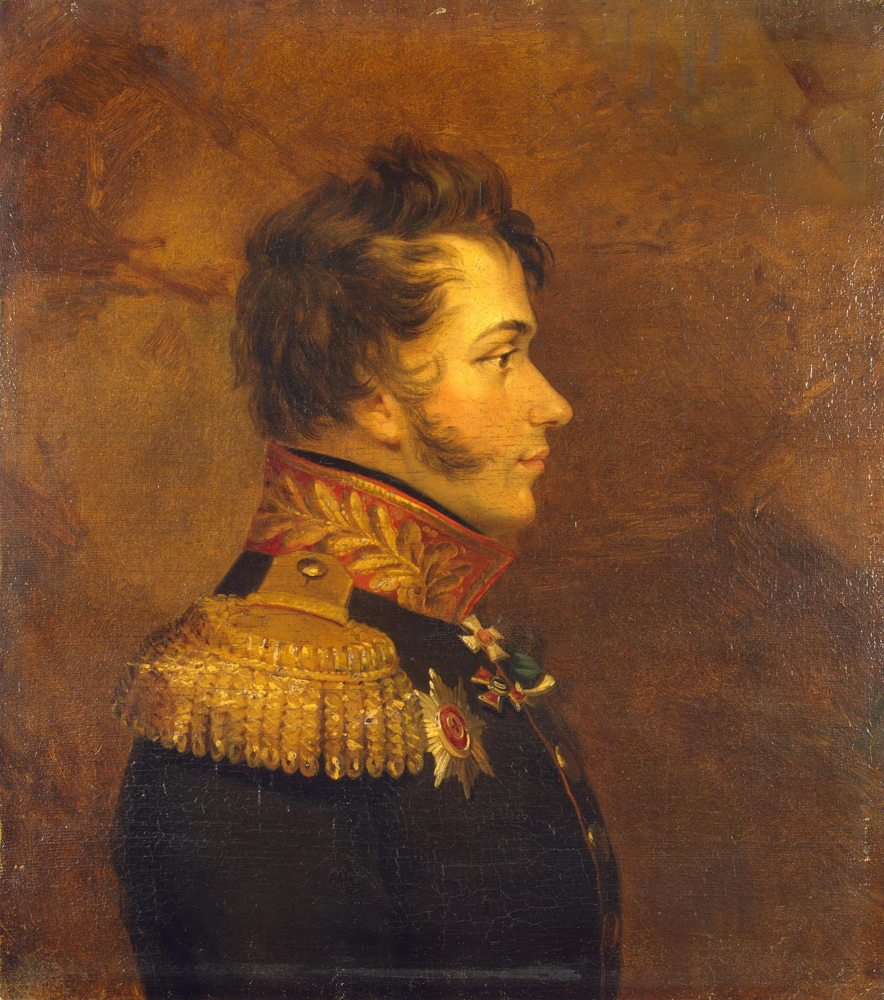
1784 – 1813 | Russian Major General of the Napoleonic Wars
Prince Nikolay Danilovich Kudashev came from a Tatar noble family and entered military service in 1801. He fought in the campaign of 1805 and the Russo-Swedish War of 1808–1809, earning a reputation for conspicuous bravery, and was promoted to colonel in 1811. In 1812 he served on the staff of his father-in-law, Field Marshal Mikhail Kutuzov; fought at the Battle of Borodino; and commanded an army partisan detachment that harassed Napoleon's forces around Moscow and during the French retreat, distinguishing himself at the Battle of Krasnoi. Promoted to major general and awarded the Order of St. George (3rd class) in 1813, he was mortally wounded at the Battle of Leipzig — the "Battle of the Nations" — and died on November 9, 1813. His portrait hangs in the Military Gallery of the Winter Palace at the Hermitage in Saint Petersburg.
I knew almost nothing about Prince Nikolay except that his portrait hang in our dining room for many years. Many years later, I was surprised to see a near identical portrait hung in the hall of famous commanders in the Hermitage Museum.
I assume that he was one of the reasons why his grandson, Prince Sergei, wrote "History of the War of 1812".
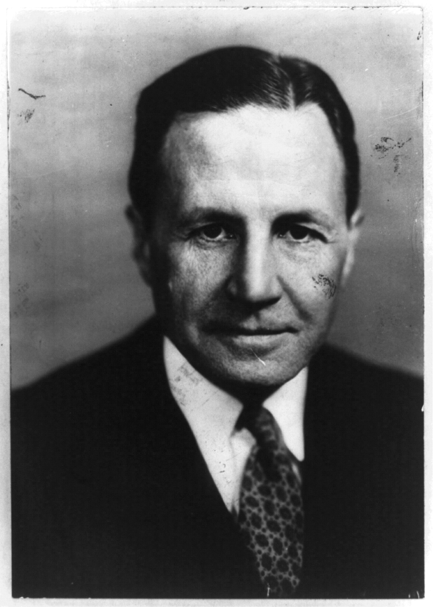
1887 – 1982 | Career diplomat and Assistant Secretary of State
A distinguished career diplomat whom the New York Times called "the perfect diplomat," Norman Armour served as Chief of Mission in eight countries across a career spanning both World Wars. He served as U.S. Ambassador to Haiti (1932–1935), where he negotiated the withdrawal of American Marines following a 25-year occupation; to Canada (1935–1939); to Chile and Argentina during the WWII era; and to Spain, Venezuela, and Guatemala. He also served as Assistant Secretary of State for Political Affairs under Secretary of State George C. Marshall and famously protested Senator Joseph McCarthy's attacks on Foreign Service personnel suspected of communist sympathies. Born in Brighton, England, he earned degrees from Princeton University and Harvard Law School, spoke fluent French, and lived to age 94.
"Dear Granny and Grandfather,". I was known as a very good correspondent as a boy. Grandfather said more than once my autograph would be very valuable in the future because it was so rare.
The two of them were consummate diplomats. Having a meal with them was always engaging. The conversations were beautifully timed so that one could talk while the other one was eating.
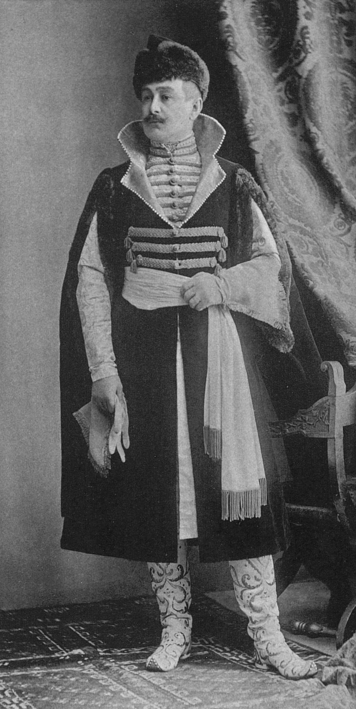
Until my new friend Eric Van der Graaf came along, I knew almost nothing about Prince Sergey. Perhaps the only thing was that I'd been to see his house on Bolshoya Moskoya in St. Petersburg with my daughter Cynthia. And perhaps also that the cadet ships were at the Yussefov palace for a party the night that Rasputin was assassinated.
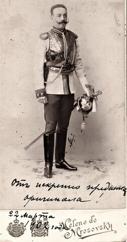
1871 – 1952 | Major General in the Imperial Russian Army
Born July 2, 1871, in Saint Petersburg into the Baltic German von Nieroth family, Theodor was the son of the courtier Maximilian von Nieroth and Anastasia Trepova — a grandson of Fyodor Trepov (senior). After graduating from the elite Page Corps in 1892, he served in a Guards cavalry regiment, was promoted to colonel in 1907, and commanded the 16th Hussar Regiment (1911) and then the Life Guards Dragoon Regiment (1912), leading the latter through the First World War. In January 1915 he was awarded the Sword of St. George for repelling an enemy cavalry brigade near Schirwindt in East Prussia, where he was wounded but stayed in the field; he went on to command the 2nd Guards Cavalry Division. During the Russian Civil War he served in Anton Denikin's White Volunteer Army before emigrating, and died in France on March 26, 1952.
Theo Armour says: My nickname comes from my uncle Theo. I remember visiting his house in Amblainy France. In particular, I remember the wastebasket that was made out of the foot of a real elephant. I also remember his funeral in Pere La Chaise Cemetery in Paris. He presented me with a sliver cup inscribed with "From Theo Sr. to Theo Jr".
I remember hearing that he was the youngest general in this horse army. And also, he went out on a three-day hunt on one of his properties. On the hunt, he discovered a village that was not on any map, so the first thing he did was send out the tax collector.
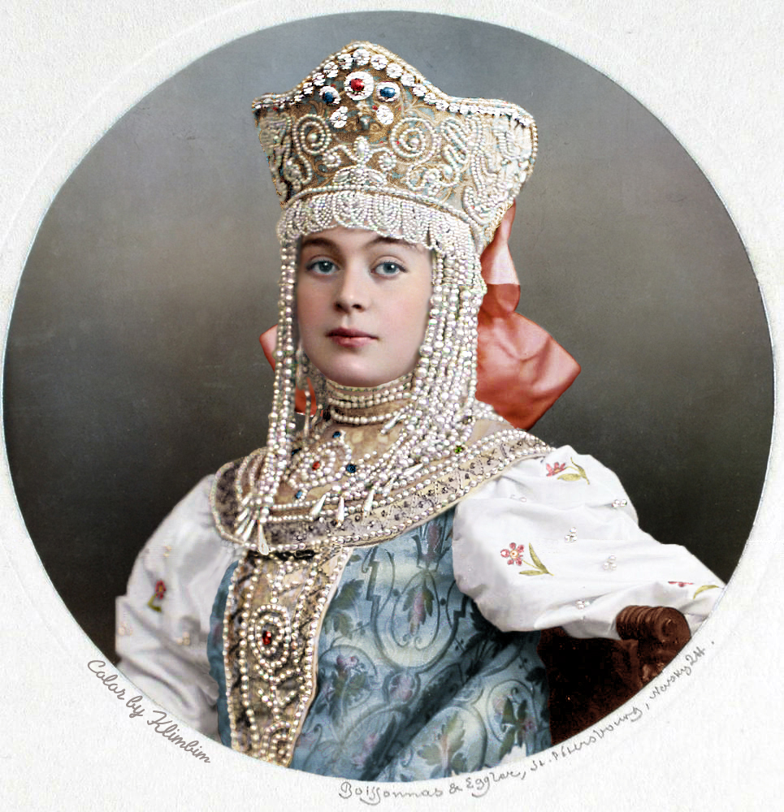
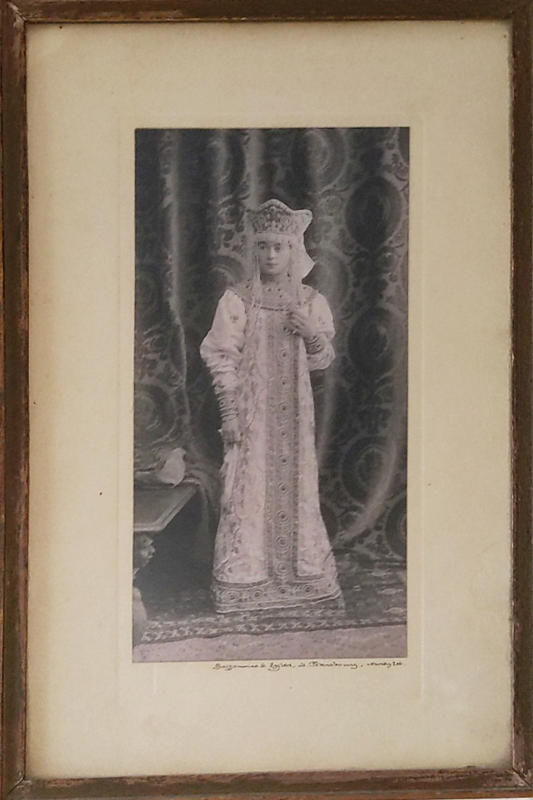
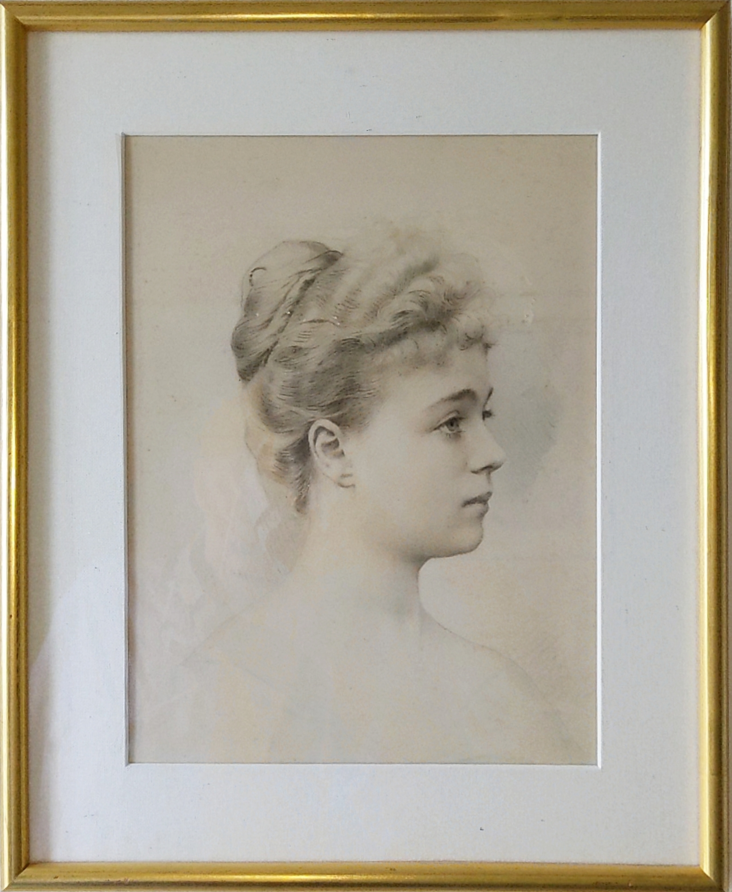
For many years, the portrait of her as a young woman was one of the first sights I saw when I got out of bed.
Apart from the incredible family she came from, all I know is that she was a significant donor to a cathedral in Kiev, Ukraine. She died of the Spanish flu in Amblainville, France in 1920, Presumably living in the house with her brother, my Uncle Theo.
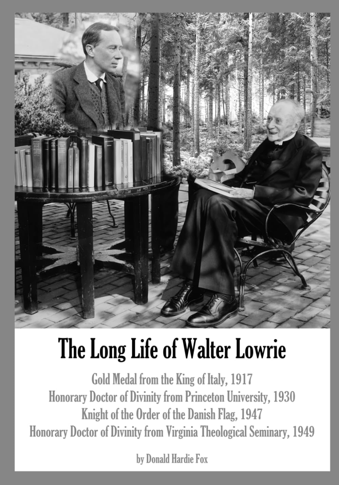
1868 – 1959 | Kierkegaardian theologian and prolific translator
An Episcopal priest and scholar of extraordinary depth, Walter Lowrie devoted his career to translating and interpreting the works of Danish philosopher Søren Kierkegaard for the English-speaking world. After graduating from Princeton University and studying in Europe, he served as rector of St. Paul's American Church in Rome (1907–1930), then began his "itinerant ministry" publishing 39 books and numerous scholarly articles. From 1939–1945, he published twelve volumes of Kierkegaard translations in collaboration with fellow scholar David F. Swenson. His contributions to Kierkegaard scholarship were so significant that Denmark awarded him the Knight Cross of the Order of Dannebrog in 1947 "as an appreciation of his extensive efforts to spread the knowledge of the intellectual production of Søren Kierkegaard in the Anglo-Saxon world."
Even though he died when I was seven, I had distinct memories of Uncle Walter sitting in his chair that are now on their way to Amsterdam to my daughter's house. He had a Chinese chest full of little toys for me to play with. Anne de Bee always talked about him, and his young lovers remained her friends all through her life and my life.
And then, of course, he was part of the team that translated Care for God into English.
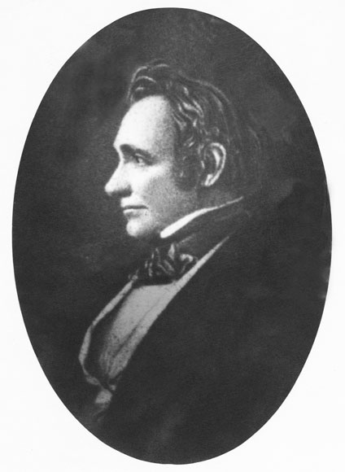
1795 – 1844 | Governor of Arkansas Territory and U.S. Senator
Connected to the family through Ida Watkins (maternal great-grandmother), William Savin Fulton was born June 2, 1795, in Cecil County, Maryland, and graduated from Baltimore College in 1813. With the outbreak of the War of 1812 he enlisted at Fort McHenry and took part in the Battle of Baltimore, and in 1818 served as military secretary to General Andrew Jackson during the Seminole War. Admitted to the bar in Tennessee in 1817, he later settled in Alabama and won election to its legislature. President Jackson appointed him Secretary of the Arkansas Territory in 1829 and then Governor of the Territory in 1835. When Arkansas achieved statehood in 1836, Fulton became one of its first U.S. Senators, serving as a Jacksonian Democrat until his death at his Little Rock home on August 15, 1844. Fulton County, Arkansas, is named in his honor.
Part of the family that my grandmother vaguely mentioned but was never specific about. I sort of vaguely heard that somebody in the family who was a French Huguenot who was the first governor of Alabama. I assume mistaken identity for this person.
I believe, looking at his profile on this image, that my cousin has a shadow profile of him and his wife in her house in New Hampshire.